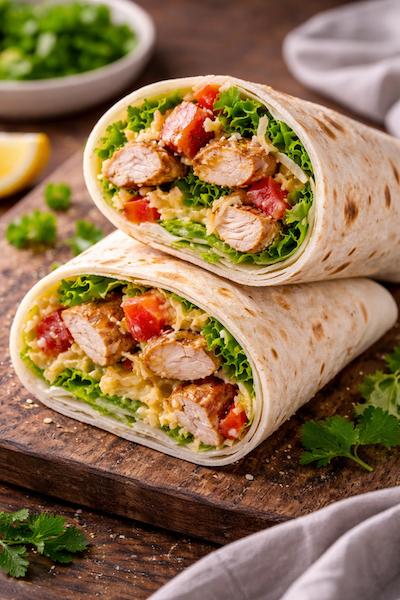

Pourquoi faire un wrap poulet rapide ?
- ✅ Prêt en moins de 10 minutes
- ✅ Recette rapide du soir équilibrée
- ✅ Facile à personnaliser
- ✅ Parfait pour utiliser un reste de poulet
Ingrédients (2 personnes)
Préparation du wrap poulet (10 min)
- Émince le poulet en fines lamelles.
- Coupe la tomate en dés et prépare la salade.
- Réchauffe légèrement les tortillas (poêle 30 sec).
- Étale la sauce au centre du wrap.
- Ajoute poulet + crudités + fromage.
- Replie les côtés puis roule fermement.
- Coupe en deux et sers immédiatement.
Astuces pour un wrap poulet parfait
- 🔥 Ne surcharge pas le wrap pour éviter qu’il s’ouvre.
- 🥬 Ajoute toujours une base de sauce pour éviter qu’il soit sec.
- 🌶️ Pour plus de goût : paprika, curry ou sauce piquante.
Variantes rapides
- 🥑 Wrap poulet avocat
- 🌯 Wrap poulet curry
- 🧀 Wrap poulet fromage fondu
- 🥗 Version healthy : sauce yaourt citron
- 🌮 Version épicée : sauce salsa
Avec quoi servir ?
- Salade fraîche
- Pommes de terre sautées
- Chips maison
FAQ – Wrap poulet rapide
Peut-on préparer les wraps à l’avance ?
Oui, mais ajoute la sauce au dernier moment pour éviter qu’ils deviennent mous.
Quel poulet utiliser ?
Poulet rôti, poulet grillé ou reste de poulet du frigo.
Comment faire un wrap plus croustillant ?
Passe-le 2 minutes à la poêle après l’avoir roulé.
À lire aussi
Poulet curry rapide |
Omelette rapide du soir |
Recettes rapides faciles
: 25 idées.